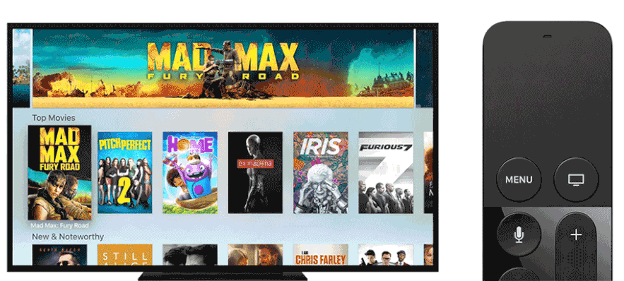
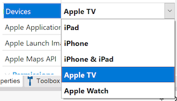
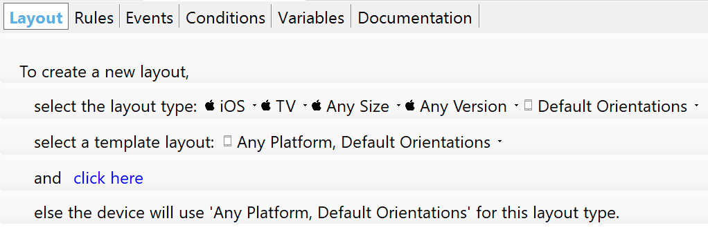

Apple TV is one of the new members of the Apple family that can run GeneXus applications. For Apple Watch development, take a look at Getting Started with watchOS. Apple TV is a unique platform with unique design requirements. In many households, Apple TV sits in the living room, bringing people together for entertainment and conversation. Apple TV uses a focus model for navigation. People use the remote to move through interface elements such as movie posters, apps, or buttons, highlighting each item as they come to it. An element is considered focused or in focus when the user highlights the item but has not clicked it. Clicking an item with the remote takes you deeper into an app’s hierarchy, pressing Menu always takes you back.  Beautiful, edge-to-edge artwork engulfs people in a rich, cinematic experience. Focusing on a piece of content elevates it, and the touch surface of the remote makes you feel like you're touching the screen, as on an iOS device. Sound is used throughout the system to enhance the visual experience. The tvOS Main ObjectThe starting point of your tvOS application should be a new main object, it could be a Menu object or a Panel object. Set the Main program property to true. Set the Devices property to the value "Apple TV":  On Apple TV, Navigation Style property can be Flip, or based on Tabs, using a Menu object with the control property set to Tabs. Content and DesignOn iOS devices, people interact with the user interface by tapping or swiping directly on the touchscreen. Apple TV doesn’t have a touchscreen. Instead, a remote is used to interact indirectly with elements onscreen from across the room. This interaction is based on a focus model. By pressing buttons and using gestures on the remote, people move focus from element to element, stop on a specific one, and click to access content or initiate action. As focus changes, subtle animations and the parallax effect produce a feeling of depth that clearly identifies the item that’s currently in focus. In addition to the new controls, the overall user experience is drastically different. Macs and iOS devices are generally a single-person experience. A user may interact with others through your app, but that user is still the only person using the device. With the new Apple TV, the user experience becomes much more social. Several people can be sitting on the couch and interacting with your app and each other. Designing apps to take advantage of these changes is crucial to designing a great app. Local Storage for Your App Is LimitedPersistent storage on tvOS is not allowed. All data must be purgeable by the operating system when space is low. Both online and offline architectures are supported. However, if you use an offline architecture, the local database should be considered purgeable, as the operating system may delete it when needed. For that reason, for Data Synchronization, recommended values for Data Receive Criteria property and Send Changes property is Never. On Apple TV you can expect good connectivity at all times, not like on iOS or watchOS were connection could be bad or not available sometimes. LayoutTVs vary widely in size. On Apple TV, app layouts don’t automatically adapt to the size of the screen like they do in iOS. Instead, apps show the same exact interface on every display. Take extra care in designing your layout so that it looks amazing in a variety of screen sizes. Design your app’s user interface for a screen resolution of 1920 x 1080 dips, which implies a widescreen aspect ratio of 16:9. @1x and @2x densities assets should be included (1920px x 1080px (1080p) for 1x and 3840px x 2160px (4K) for 2x). To select the Theme to be used, you could use the predefined platform "Apple TV". Also, "Apple TV" platform, or the more generic "TV", could be used to re-use an object logic across multiple platforms, designing a specific layout for TV:  A few tips for designing your layouts
Application IconLayered images are required for app icons. App icons must have between two and five layers to create a sense of depth and vitality as your icon comes into focus. Layered ImagesLayered images are at the essence of the Apple TV user experience. In conjunction with the parallax effect, they produce a sense of realism and vigor that evokes a personal connection as people interact with content onscreen. A layered image consists of two to five distinct layers that come together to form a single image. The separation between layers, along with the use of transparency, creates a feeling of depth. As someone interacts with an image, layers closer to the surface elevate and scale, overlapping lower layers farther back and producing a 3D effect.
Layered images can be embedded in your app or retrieved from a content server at runtime. Use the Parallax Previewer app for macOS, the Parallax Exporter Adobe Photoshop plug-in, or Xcode to create layered images for inclusion in your app, and make sure they appear as expected during the parallax effect. You can download Parallax Previewer and Parallax Exporter here. Parallax Previewer can import .png images to serve as individual layers, layered images (.lsr) created with the Parallax Exporter plug-in, and layered Photoshop images (.psd). Parallax Previewer can export layered images (.lsr). If your app retrieves layered images from a content server at runtime, you must provide those images in runtime layered image (.lcr) format. You don’t create runtime layered images directly; you generate them from .lsr or Photoshop files using the layerutil command-line tool that’s installed with Xcode. PrototypingExecution Simulator now allows selecting Apple TV simulators. Selecting an Apple TV simulator, and running the app main object launches the app. Knowledge Base Navigator is currently not available for tvOS applications, but live editing can be used. DistributionFor distributing your app, you could choose to distribute it as a standalone application, or linking it to your iOS app. By linking the iOS and tvOS versions of your app in iTunes Connect, you can enable universal purchase for your app. 'Universal purchase' allows users to download both iOS and tvOS versions of your app with a single purchase, providing a seamless experience for your users. You can link your iOS and tvOS apps by using the same value for the Apple Bundle Identifier property, in both application's main objects.
For more detailed information about Apple TV development, see Apple's Human Interface Guidelines for tvOS. |
| Backlinks |
| Getting Started with watchOS and tvOS |